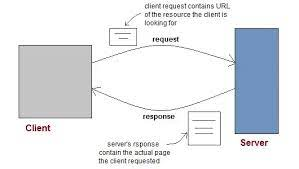
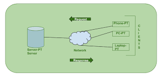
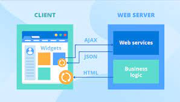
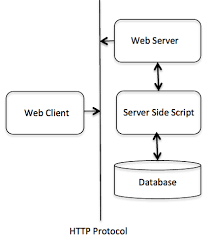
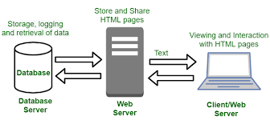

SYLLABUS
- Introduction to Web
- Client/Server
- Components of Web
- Types of Web content
- Overview of HTTP
- Generation of dynamic webpages
- Application Servers
- Web Security
Introduction to Web
World Wide Web, also known as the web, is a collection of websites and web pages stored in web servers and connected to the local computer through the internet. A huge amount of images, documents, and other resources are stored in the server and accessed using hyperlinks. Thus people use the internet through the web.Sir Tim Berners-Lee introduced the concept of the WWW at the European Organization of Nuclear Research (CERN). He developed a personal database of people and software models and used hypertext so that each new page details was linked to an existing page.Sir Tim Berners-Lee introduced tools such as HyperText Transfer Protocol (HTTP) between 1989-1991, Web browser in 1990, and HyperText Markup Language (HTML) in 1993.Trade marketing started using WWW during 1996-1998. The term e-commerce got introduced during this period.
During 1998-2000, many entrepreneurs started selling their ideas using dotcom (.com) boom.
From 2000 – till now, the WWW has got an evolving due to various development such as search engines, e-commerce sites, online booking, social medias, blogs, etc.

Client/Server Topics
The Client-server model is a distributed application structure that partitions task or workload between the providers of a resource or service, called servers, and service requesters called clients. In the client-server architecture, when the client computer sends a request for data to the server through the internet, the server accepts the requested process and deliver the data packets requested back to the client. Clients do not share any of their resources. Examples of Client-Server Model are Email, World Wide Web, etc.
How the Client-Server Model works ?
In this article we are going to take a dive into the Client-Server model and have a look at how the Internet works via, web browsers. This article will help us in having a solid foundation of the WEB and help in working with WEB technologies with ease.
Client: When we talk the word Client, it mean to talk of a person or an organization using a particular service. Similarly in the digital world a Client is a computer (Host) i.e. capable of receiving information or using a particular service from the service providers (Servers).
Servers: Similarly, when we talk the word Servers, It mean a person or medium that serves something. Similarly in this digital world a Server is a remote computer which provides information (data) or access to particular services.
So, its basically the Client requesting something and the Server serving it as long as its present in the database.

Components of Web Application
All web-based database applications have three primary components: A web browser (or client), a web application server, and a database server.
Web-based database applications rely on a database server, which provides the data for the application. The database server sometimes also provides business logic in the form of stored procedures. Stored procedures can offer significant performance advantages, especially in a multi-tiered architecture. In addition to database servers, other enterprise information system components include IMS databases, IBM® MQ messages, and CICS® records.
The clients handle the presentation logic, which controls the way in which users interact with the application. In some cases, the client validates user-provided input. Web applications sometimes integrate Java™ applets into the client-side logic to improve the presentation layer.
Applet
A Java program that is part of a Hypertext Markup Language (HTML) page. (HTML is the standard method for presenting web data to users.) Applets work with Java-enabled browsers, such as Microsoft Internet Explorer; they are loaded when the HTML page is processed.
Web application servers manage the business logic. The business logic, typically written in Java, supports multitiered applications. The web application server can manage requests from a variety of remote clients. The web application layer might include JavaServer Pages (JSP) files, Java servlets, Enterprise JavaBeans (EJB) components, or web services.
JSP
A technology that provides a consistent way to extend web server functionality and create dynamic web content. The web applications that you develop with JSP technology are server and platform independent.
Servlet
A Java program that responds to client requests and generates responses dynamically.
EJB
A component architecture for building distributed applications with the Java programming model. Server transactional components are reusable and provide portability across application servers.
Web services
Self-contained, modular applications that provide an interface between the provider and the consumer of application resources. You can read more about web services later in this information.

Types of Web Content
Marketing page content. Your homepage, About page, and landing pages are all types of marketing pages. Marketing page content communicates information about your brand to current or potential customers. These pages often contain multimedia content elements like photos, illustrations, graphics, or video.
Product or service page content. Product or service page content explains the value of particular products or services, may include posted answers to customer questions, and encourages purchases through product reviews. Product pages typically include a call to action (CTA), such as an Add to Cart button.
Blog posts. Blog content is article-style, long-form written content that provides information of value to your target audiences. Unlike marketing page content, blog content isn’t necessarily always about your company. Instead, blog posts are often part of a company’s search engine optimization (SEO) and content marketing strategy: They educate or entertain and use specific keywords in an effort to show up in search engine results.
User-generated content. Some companies post user-generated content (like testimonials or reviews) to their websites. User-generated content encourages purchases through social proof, the phenomenon in which people choose a course of action by mimicking the actions of others.
Case studies. Business-to-business (B2B) companies often use case studies to show their product or service in action with a particular customer. These typically examine a particular customer relationship and show how a product or service helped that customer solve a problem or reach a goal.
Downloadable content. Some companies will make long-form content (like ebooks and whitepapers) available for download in exchange for your contact information—this is known as gating content. Downloadable content is popular with B2B companies, but it can also be effective for B2C ecommerce companies, as long as the content provides specific value that isn’t readily available through online sources. For example, an ecommerce brand that sells boutique tonic water and ginger beer might offer a downloadable introduction to mixology ebook that includes a section of recipes featuring the company’s products.
Help center content. Help center content answers common customer questions and helps customers navigate any potential problems. It can increase customer satisfaction and reduce the burden on your customer service team. For example, if your customers frequently struggle to find the On button for your product, including instructions in your FAQ section can limit customer frustration and reduce the number of people who contact you for help.
Overview of HTTP
HTTP is a protocol for fetching resources such as HTML documents. It is the foundation of any data exchange on the Web and it is a client-server protocol, which means requests are initiated by the recipient, usually the Web browser. A complete document is reconstructed from the different sub-documents fetched, for instance, text, layout description, images, videos, scripts, and more.Clients and servers communicate by exchanging individual messages (as opposed to a stream of data). The messages sent by the client, usually a Web browser, are called requests and the messages sent by the server as an answer are called responses.
esigned in the early 1990s, HTTP is an extensible protocol which has evolved over time. It is an application layer protocol that is sent over TCP, or over a TLS-encrypted TCP connection, though any reliable transport protocol could theoretically be used. Due to its extensibility, it is used to not only fetch hypertext documents, but also images and videos or to post content to servers, like with HTML form results. HTTP can also be used to fetch parts of documents to update Web pages on demand.

Generation of dynamic webpages
A dynamic web page is a web page constructed at runtime (during software execution), as opposed to a static web page, delivered as it is stored. A server-side dynamic web page is a web page whose construction is controlled by an application server processing server-side scripts. In server-side scripting, parameters determine how the assembly of every new web page proceeds, and including the setting up of more client-side processing. A client-side dynamic web page processes the web page using JavaScript running in the browser as it loads. JavaScript can interact with the page via Document Object Model (DOM), to query page state and modify it. Even though a web page can be dynamic on the client-side, it can still be hosted on a static hosting service such as GitHub Pages or Amazon S3 as long as there is not any server-side code included.
A dynamic web page is then reloaded by the user or by a computer program to change some variable content. The updating information could come from the server, or from changes made to that page's DOM. This may or may not truncate the browsing history or create a saved version to go back to, but a dynamic web page update using AJAX technologies will neither create a page to go back to, nor truncate the web browsing history forward of the displayed page. Using AJAX, the end user gets one dynamic page managed as a single page in the web browser while the actual web content rendered on that page can vary. The AJAX engine sits only on the browser requesting parts of its DOM, the DOM, for its client, from an application server. A particular application server could offer a standardized REST style interface to offer services to the web application.

Application Servers
Application servers are network computers that store and run an application for client computers. Application servers, whatever their function, occupy a large chunk of computing territory between database servers and the end user. Most broadly, this is called “middleware” which tells us something about what application servers do. First and foremost, application servers connect database information (usually coming from a database server) and the end-user or client program (often running in a Web browser). There are many reasons for having an intermediate player in this connection, including a desire to decrease the size and complexity of client programs, the need to cache and control the data flow for better performance, and a requirement to provide security for both data and user traffic.
In the early days of application servers, it was realized that applications themselves, the programs people were using to get work done, were becoming bigger and more complex, both to write and maintain. At the same time, pressure was increasing for applications to share more of their data and sometimes functionality. More applications were either located on a network or used networks extensively. It seemed logical to have some kind of program residing on the network that would help share application capabilities in an organized and efficient way, and make it easier to write, manage, and maintain the applications.
Web Security
Web security refers to protecting networks, servers, and computer systems from damage to or the theft of software, hardware, or data. It includes protecting computer systems from misdirecting or disrupting the services they are designed to provide.
Web security is synonymous with cybersecurity and also covers website security, which involves protecting websites from attacks. It includes cloud security and web application security, which defend cloud services and web-based applications, respectively. Website protection technology has enabled enhanced protection mechanisms, such as the protection of a virtual private network (VPN), which also falls under the web security umbrella.
Web security is crucial to the smooth operation of any business that uses computers. If a website is hacked or hackers are able to manipulate your systems or software, your website—and even your entire network—can be brought down, halting business operations. Businesses need to account for the factors that go into web security and threat prevention.
Web security is a broad category of security solutions that protect your users, devices, and wider network against internet-based cyberattacks—malware, phishing, and more—that can lead to breaches and data loss. It reduces the security risk to your organization when your users accidentally access malicious files and websites through some combination of firewall inspection, intrusion prevention system (IPS) scanning, sandboxing, URL filtering, and various other security and access controls.